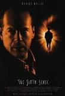

The Sixth Sense is a 1999 psychological thriller film written and directed by M. Night Shyamalan. The story follows Malcolm Crowe, a child psychologist from Philadelphia, Pennsylvania who failed a prior patient, who shot him then himself, and whos wife has grown cold and distant to him. We follow him on his work on a 9 year-old boy named Cole Star, who tells Malcolm that he can see dead people. Malcolm considers dropping the case, but once he hears an audio recording of a session with him and Vincent, the failed prior patient, he hears a man crying to Vincent in spanish, and begins to believe Cole. Afterwards he helps Cole try and learn to live with the ghosts after helping one of them who was died to poison. Colm begins to fit in at school and gives Malcolm the advice to talk to his wife while she sleeps. He does so, and realizes the he himself, has been dead since he was shot by Vincent, and did not in fact survive. He realizes things he had not before, and finds the bullet wound on his body that killed him. He comes to terms with his death, comforts his wife which helps her move on, and because his business is complete, his soul is able to depart.
Director: M. Night Shyamalan